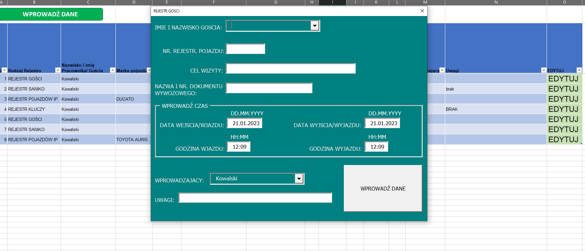
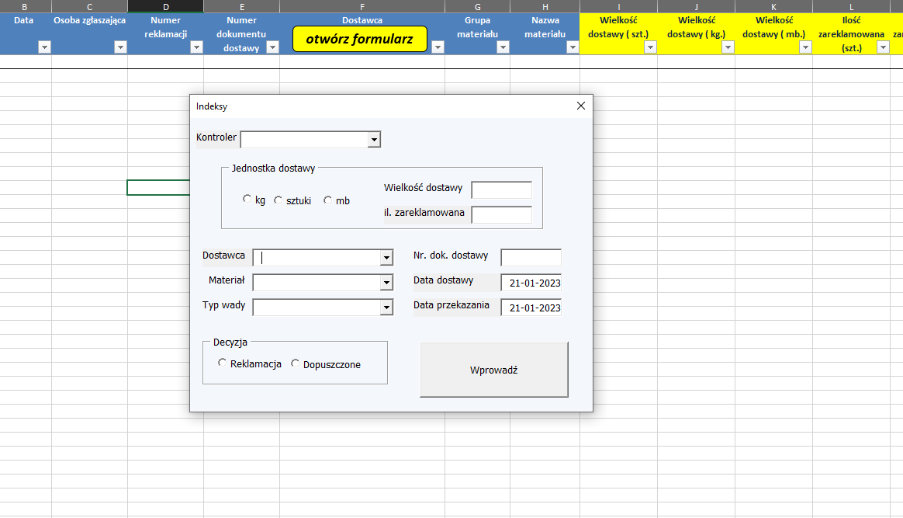
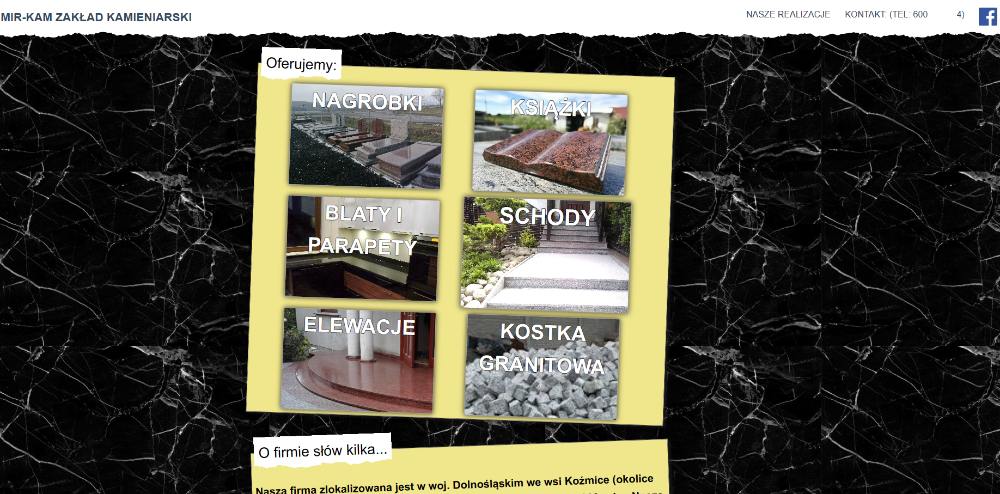
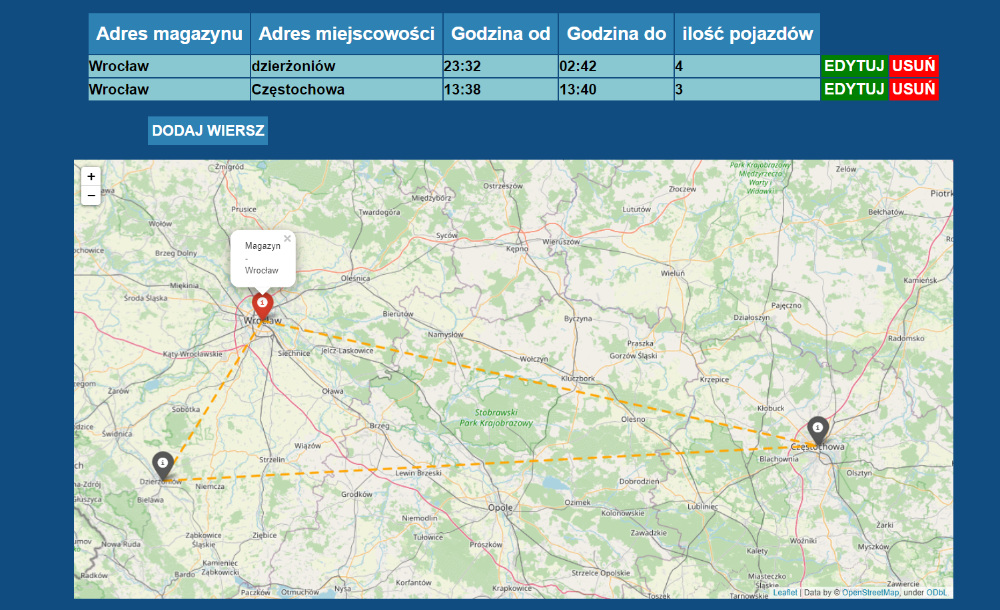

Aplikacja w Excelu do administracji

Aplikacja służy do wprowadzania danych administracyjnych poprzez interaktywny formularz (userform), dane z formularza zapisują się w arkuszu
Aplikacja w Excelu do zarządzania reklamacjami

Aplikacja służy do wprowadzania danych o reklamacjach poprzez interaktywny formularz (userform), dane z formularza zapisują się w arkuszu
Strona internetowa dla zakładu Kamieniarskiego

Prosta strona internetowa zrobiona we Flasku, z kilkoma podstronami.
Aplikacja do zarządzania magazynami na mapie

Aplikacja we flasku, która pozwala użytkownikowi połączyć magazyny z miejscowościami na mapie